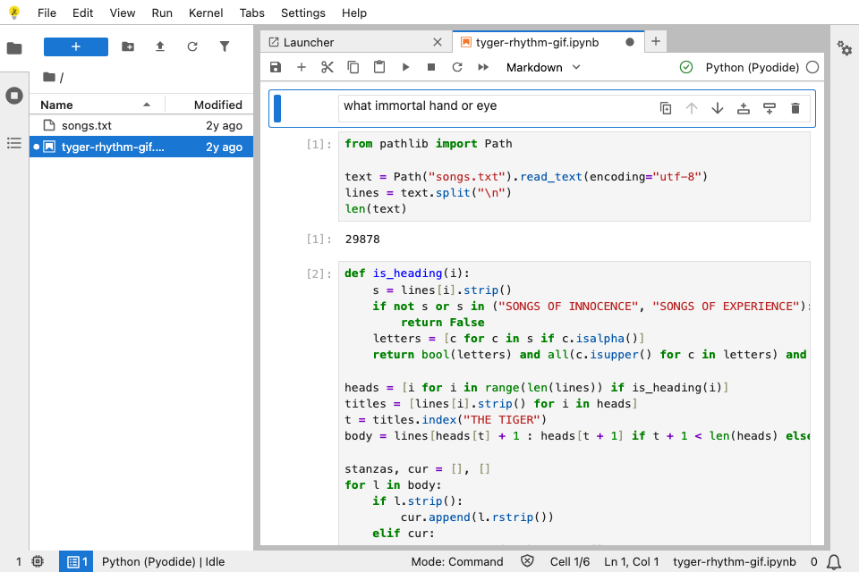

mandelbrot-live.ipynb ●
Code
[1]:from decimal import Decimal, getcontext
center = (Decimal("-0.743643887037158704752191506114774"),
Decimal("0.131825904205311970493132056385139"))
reference = reference_orbit(*center, limit=4096)
frame = perturbation_field(center, reference, log_zoom=zoom)[1]:Python 3 · idleoutput · perturbation frame · log zoom 0.0